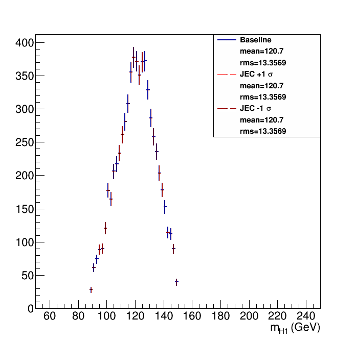
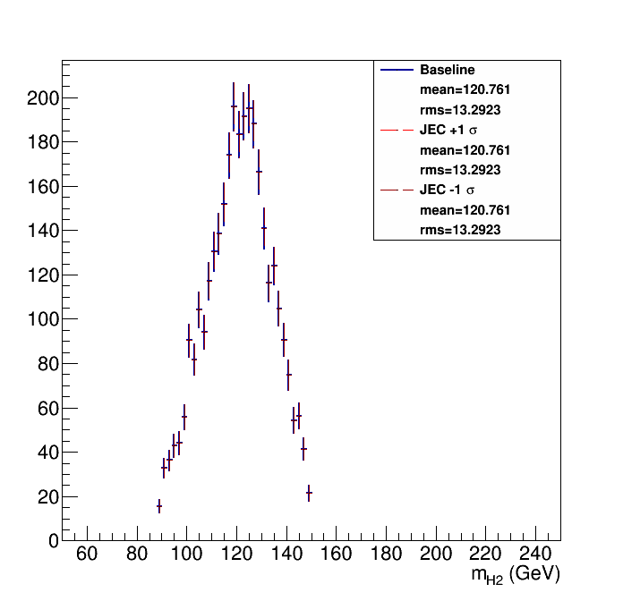

Without Kin-Fit. Fitted to an Exp-Gauss-Exp function.
=== Baseline plot ===

With Kin-Fit. Fitted to an Exp-Gauss-Exp function.
=== Baseline plot === norm = 381.63
JEC lnN 1 -
JER lnN 1 -
bTag lnN 1 -
| Higgs 1 mass  | Higgs 2 mass  |
Without Kin-Fit. Fitted to an Exp-Gauss-Exp function.=== Baseline plot === |
With Kin-Fit. Fitted to an Exp-Gauss-Exp function.=== Baseline plot === norm = 381.63 JEC lnN 1 - JER lnN 1 - bTag lnN 1 - |